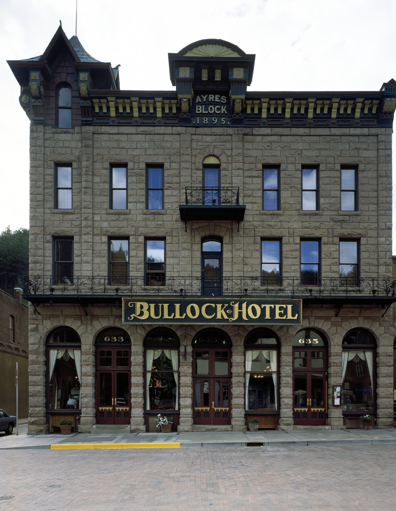
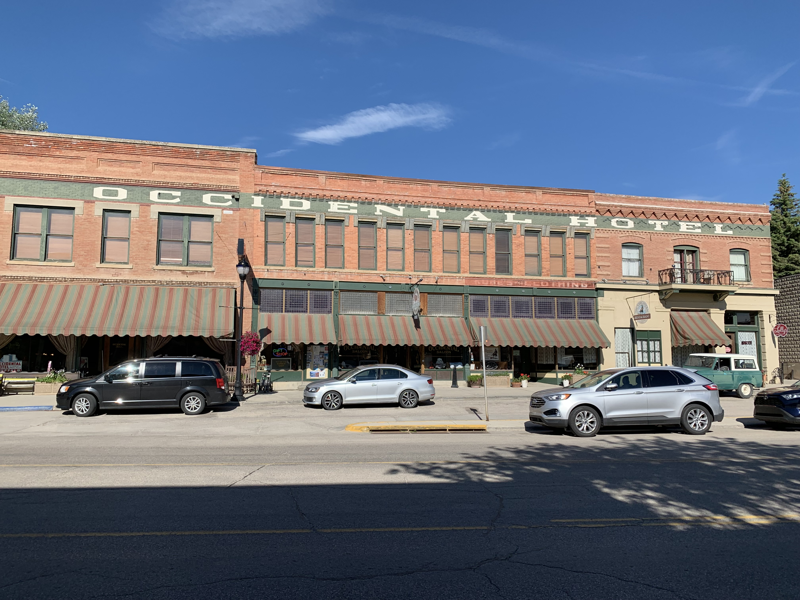
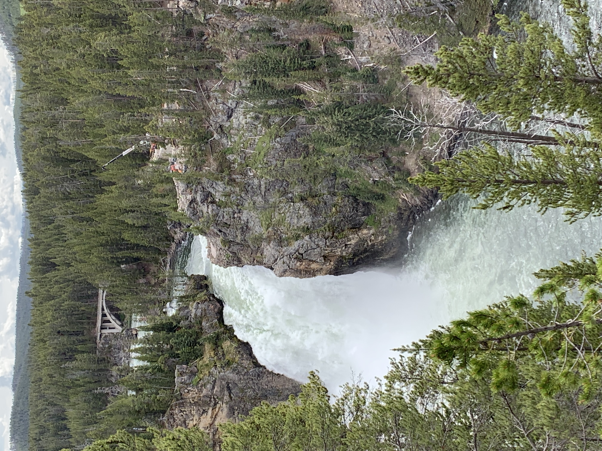
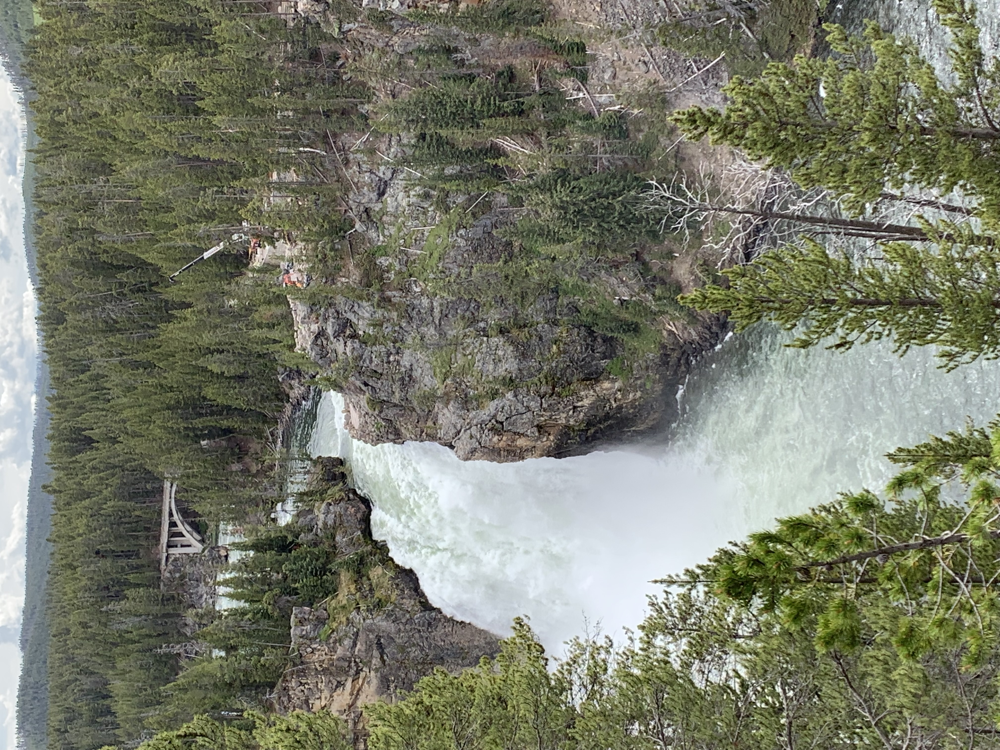
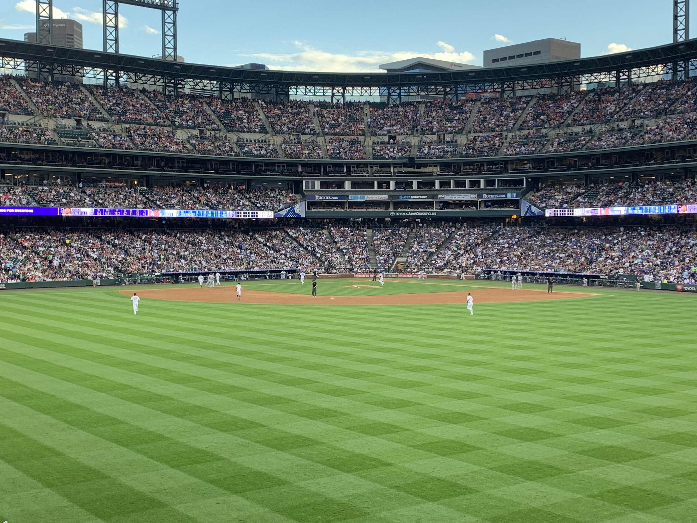

Setting Out
The idea for our roadtrip started coming together piece by piece in February that year. As winter wrapped up, my wife, Paige, friend, Ryan, and I discussed outdoor activities and different settings as a way to pass time until Spring came. Not wanting to overplan, we made a general itenerary and eventually settled on three things:
- We're going to Yellowstone
- We're renting a Suburban
- We're staying at my parents in Kansas City the first night
Kansas City
We had over a thousand miles to cover and decided to depart at 5pm on a Friday. The drive from St. Louis to Kansas City is already uneventful and the trip at night didn't help to add anything. However, the start of a journey is always exciting and we were all glad to be setting out. We arrived in Kansas City around 10pm, ate a plate of cheese & crackers and went to bed.
Somewhere between Nebraska and Iowa
We knew the next leg of the journey would be the most boring. As we set out from Kansas City, after getting turned around a few times, the goal was to keep ourselves entertained along the 11 hour journey to Rapid City. A few major cities along the way provided some occasional entertainment, however, the entry into the Badlands marked a new point in our journey and brought a new excitement along with it. We pulled into Rapid City late that Saturday and planned for our first day outside the car.
Custer State Park
Our first National Park and hike of the journey wasn't one of our targeted destinations. That Sunday, we decided it wasn't far at all and set out for our first trek. The trail wasn't especially difficult, though we did have some balancing acts, small streams, and tight spaces to climb through. The reward was a view of spire rock structures at the end of the trail. After a successful first day we set out and continued to Deadwood.

Deadwood
We decided to spend two days in Deadwood, which turned out to be a tiny version of Las Vegas. Each hotel was also a casino and the strip was mostly centered around that. The history of the town was fascinating, having been a fan of the HBO show with the same name. Our hotel, The Bullock, was supposedly haunted, having been featured on shows like Ghost Adventures. We also took a tour of the historic Adams House, which was also supposed to be haunted. I don't think any of us had an experience with the supernatural, however, it was interesting. We also made a quick mandatory visit to nearby Mount Rushmore.
The Occidental on the Way to Yellowstone
After departing Deadwood, we had to stop in Buffalo, Wyoming for the night. We stayed at a hotel with former guests including Butch Cassidy and Teddy Roosevelt. We wish we could've stayed and explored the hotel and area longer, but had to set out early the next day to get into Yellowstone on schedule.
Yellowstone
We finally made it to Yellowstone National Park around lunch-time on Wednesday. We then had to drive completely through the park in order to reach out hotel in West Yellowstone. Along the way, we made some stops to the gift shops, Old Faithful, and other standard tourist destinations. We also debated and ended up buying bear mase. Day one in Yellowstone made a few things obvious:
- this park was endless
- the tourists and cars were almost equally endless
- there is no cell reception in the park
Days Two and Three in Yellowstone
The next few days were focused on hiking when possible. We were pulled into a few more tourist areas than we expected, however, were having a good time visiting them. The third day we did a 6 mile hike through an eerily deserted prarie. We were glad we had the bear mase during this leg of the journey and eventually ended at the Grand Prismatic spring.
 

Headed Back
After wrapping up in Yellowstone, we started on the long journey back home. We stopped in Denver for one last day of fun and went to the Rockies game. Finally, we made one last 10 hour sprint from Denver to St. Louis to end our roadtrip.
